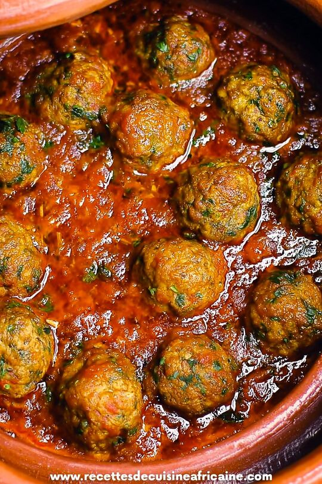

Le Tajine de kefta est un plat traditionnel du restaurant Le Fiasco, préparé avec des kefta (boulettes de viande) cuites dans une sauce aromatique à base d'épices locales, d'oignons et de tomates. Il est servie dans un tajine traditionnel, offrant une combinaison savoureuse et authentique.
Ingrédients : |
Plat |
|---|---|
|
 |